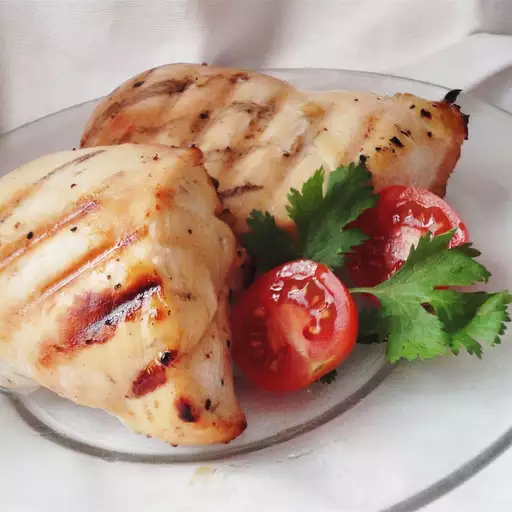

The longer you marinate, the better the sweet-sour combo gets!
In a resealable plastic bag, mix the key lime juice, honey, garlic, and lemon pepper. Place the chicken in the bag, seal, and shake to coat. Marinate in the refrigerator at least 30 minutes, turning the bag occasionally.
Preheat an outdoor grill for high heat.
Grill the marinated chicken about 8 minutes on each side, until no longer pink and juices run clear. Discard remaining marinade.